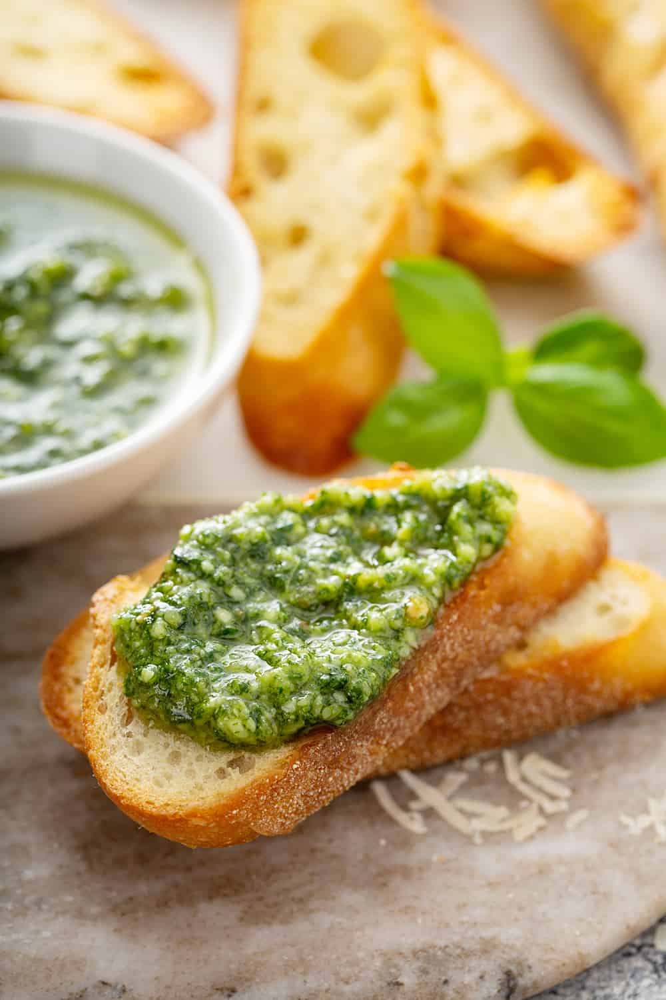

Pesto Pasta
Origin: Italian
Source: Internet
Category: Main Dish
:max_bytes(150000):strip_icc():format(webp)/__opt__aboutcom__coeus__resources__content_migration__simply_recipes__uploads__2014__08__Fresh-Basil-Pesto-LEAD-1-87df8d92c4ab49508815a29557f86104.jpg)
Pesto pasta has always been a comfort dish for me; it’s quick, it’s easy, and great food for a dinner party or a comfy night in! It requires six main ingredients, plus additional spices as you see fit. If you’re not in the mood for pasta, you can always eat the pesto sauce on bread, crackers, or eggs! This recipe makes enough for around 4 people, so adjust accordingly.
Recipe Ingredients
- 2 cups fresh basil leaves, packed (can add some spinach if you don't have enough basil leaves)
- ¾ cup freshly grated Parmesan or Romano cheese
- ½ cup extra virgin olive oil
- ⅓ cup pine nuts (can sub with same amount of chopped walnuts)
- 3 cloves garlic, minced
- Salt & pepper to taste
- 8 oz of your choice of pasta (my preferred is penne, but any type will work)
Recipe Steps
- Heat up water in a pot for the pasta and put in a teaspoon of salt.
- Pulse the basil and pine nuts in a food processor. Add a bit of olive oil as need be if the ingredients are too dry.
- Add the garlic and cheese to the food processor.
- Once water starts boiling in the pot, add pasta. Stir every couple of minutes.
- While the food processor is running, slowly pour in olive oil.
- Once pasta is al-dente, turn off the heat and drain the pasta water. Save some of it if you want your pesto to be slightly thinner.
- Add the pasta back into the pot, mix in the pesto, and voila!
Additional Food images



Matcha Cookies
Origin: Japanese
Source: https://www.justonecookbook.com/green-tea-white-chocolate-cookies/
Category: Dessert

These cookies have the perfect flavor balance of the earthiness from the matcha and the sweetness and
creaminess from
the white chocolate chips. They are crispy and sweet, perfect for an afternoon snack or dessert. Enjoy with
a cup of
tea!
Recipe Ingredients
- All purpose flour
- Matcha powder
- Unsalted butter
- Kosher salt
- Confectioners sugar
- Egg yolks
- White chocolate chips
Recipe Steps
-
Combine flour and matcha powder in large bowl
Sift the flour and matcha powder
- Beat softened butter until smooth and creamy
- Add salt and blend
- Add sugar and beat until soft and light
- Add egg yolks and mix until well combined
- Gradually add flour and matcha mixture and mix until well combined
- Add chocolate chips and mix until incorporated
- Divide dough into two pieces. Shape each piece into cylinders about 1.5in in diameter
- Wrap logs in plastic wrap and chill in fridge for at least two hours
- Slice into ⅓ inch rounds and place on a baking tray lined with parchment paper
- Bake at 350 degrees for 15 minutes
Additional Food images